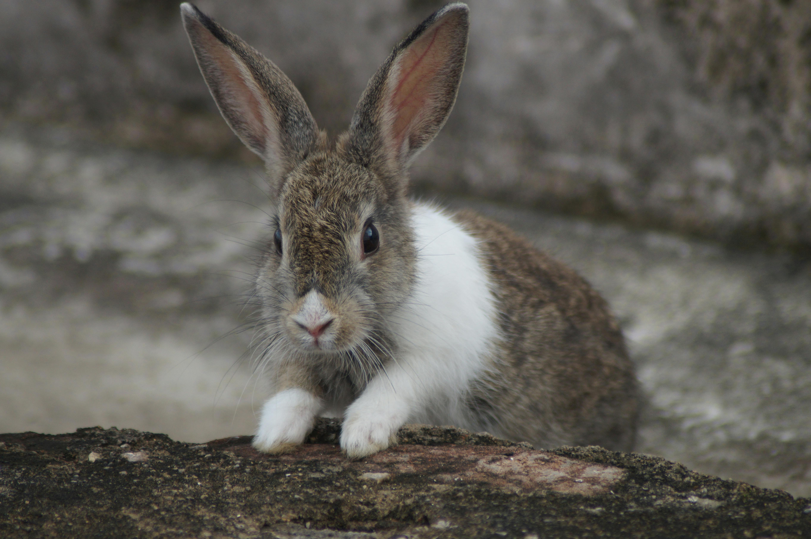
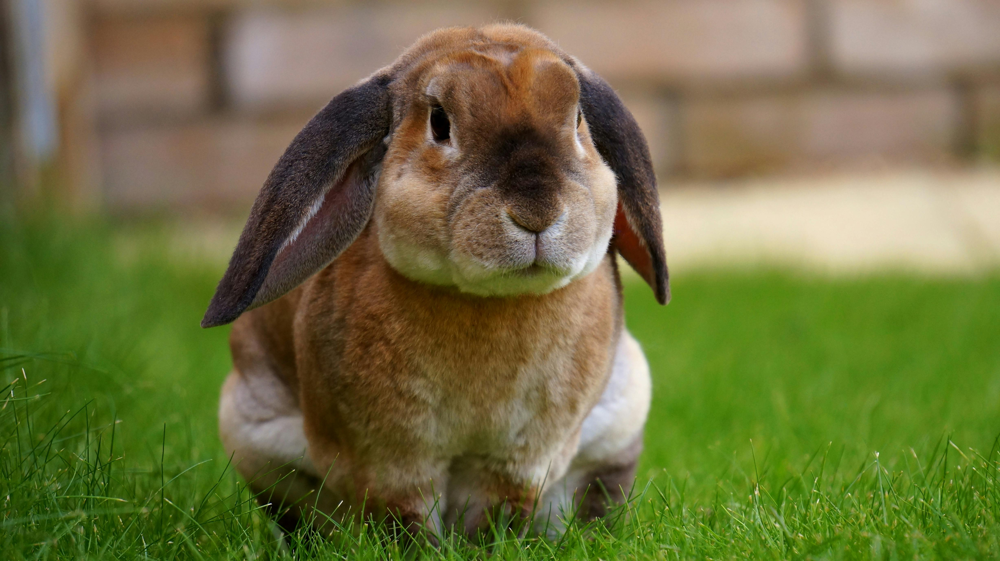

"Coelhos usam as orelhas para termorregulação." Fonte: Blog da Cobasi.
Os dentes dos coelhos nunca param de crescer, exigindo o desgaste contínuo através da mastigação de fibras. Eles possuem uma visão panorâmica incrível de quase 360 graus, o que facilita a detecção precoce de predadores.
Quando estão extremamente felizes, realizam um salto acrobático com giros no ar chamado "binky".
Diferente do que muitos pensam, coelhos não são roedores, mas sim pertencentes à ordem dos lagomorfos.
Suas grandes orelhas funcionam como um eficiente sistema térmico para ajudar a regular a temperatura do corpo.
Coelhos são mamíferos herbívoros pertencentes à ordem dos lagomorfos. Muito populares como animais de estimação e com papel importante nos ecossistemas selvagens, eles possuem características biológicas e de comportamento bastante específicas.